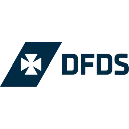
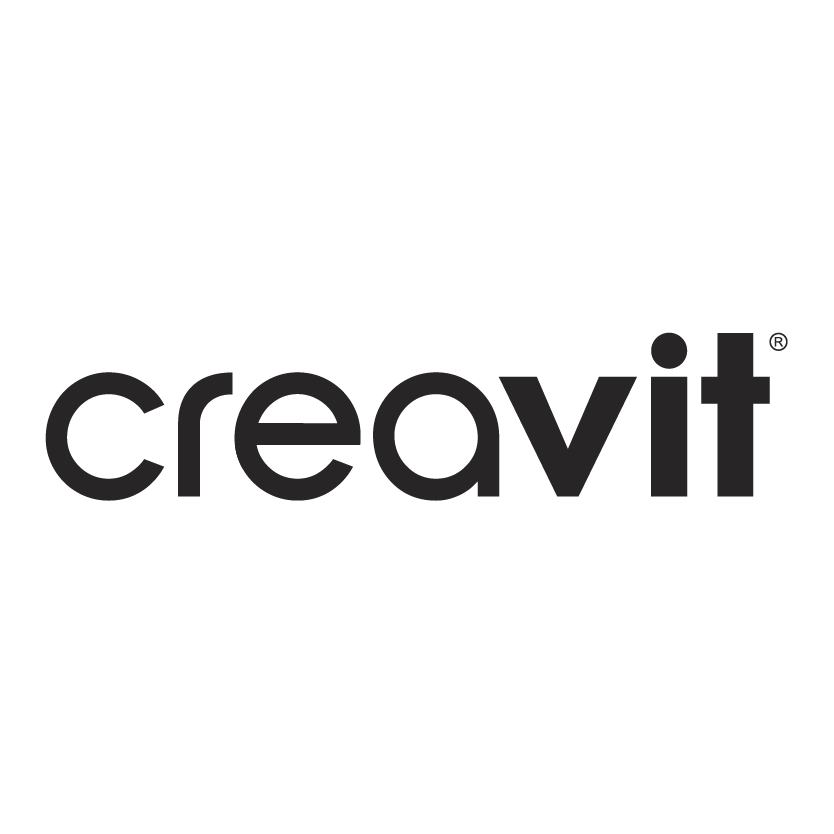

Work Experience
Intel Corporation
Chandler, AZ | May 2024 – August 2024
Software Engineering Intern
- Led internal testing and contributed to the development of AiBot, saving hours of manual effort and supporting over 2,500 users.
- Integrated a new feature to handle Intel-specific acronyms, enhancing AiBot’s ability to produce context-aware outputs.
- Implemented automated health checks to maintain system regularity, scheduling testing cycles every 6 hours.
- Developed comprehensive documentation for the Intel Learning Series, facilitating future training and knowledge sharing.
- Presented AiBot’s use cases to department heads and conducted interactive sessions to support tool integration.

DFDS
Istanbul, Turkey | June 2023 – August 2023
Integration Development Intern
- Designed and deployed integration solutions using Software AG Designer, improving data flow between platforms.
- Wrote Java scripts to resolve XML errors, optimizing system efficiency and minimizing data transfer issues.
- Streamlined processes using Azure DevOps, GitHub, and Phoenix DBT, resulting in reduced manual data entry and improved efficiency.

CREAVIT
Zonguldak, Turkey | July 2022 – August 2022
Software Development Intern
- Collaborated with the IT Department to identify and resolve system errors, achieving a 20% reduction in system downtime.
- Enhanced daily data management operations by using strategic SQL database indexing to ensure uninterrupted reliability.